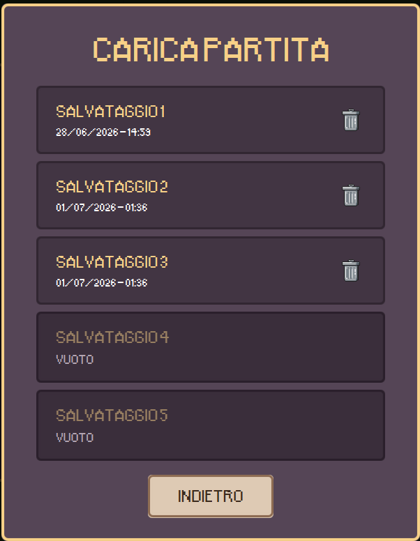

- Grammatica UML Rigorosa
- Domain Model e SSD
- Dal Modello al Codice (BCE)
- I 9 Principi GRASP
- Information Expert
- Creator
- Low Coupling
- High Cohesion
- Controller
- Polymorphism
- Pure Fabrication
- Indirection
- Protected Variations
- Tabella riassuntiva
- I 7 Pattern GoF
- 1. Factory
- 2. Singleton
- 3. Observer
- 4. Delegation
- 5. Adapter
- 6. Façade
- 7. Proxy
Grammatica UML Rigorosa
L'UML è il linguaggio formale dell'architettura del software. La conoscenza esatta della sua sintassi (i 7
diagrammi principali) è un requisito ineludibile in sede di progettazione.
Descrive la struttura statica. È
vitale conoscere la semantica visiva delle relazioni:
- Inheritance (Ereditarietà): Freccia con punta vuota. Indica una relazione
"is-a".
- Composition (Composizione): Rombo pieno. Relazione forte "part-of". Il ciclo
di vita è vincolato: se il contenitore viene distrutto, anche le parti muoiono (es. una Casa e le sue
Stanze).
- Aggregation (Aggregazione): Rombo vuoto. Relazione debole "has-a". Le parti
possono esistere indipendentemente (es. un Dipartimento e i suoi Professori).
- Dependency (Dipendenza): Freccia tratteggiata. Relazione "uses" temporanea
(es. un metodo riceve un oggetto come parametro).
classDiagram
User <|-- Admin : Inheritance (is-a)
House *-- Room : Composition (part-of)
Department o-- Professor : Aggregation (has-a)
OrderController ..> OrderValidator : Dependency (uses)
A differenza dell'SSD, questo
diagramma "esplode" la scatola nera e rappresenta le interazioni dinamiche interne tra gli oggetti del
sistema. I messaggi si dividono in Sincroni (freccia piena, blocca il chiamante), Asincroni (freccia aperta)
e di Ritorno (linea tratteggiata). I flussi logici complessi si modellano coi Combined
Fragments:
- alt: Percorsi alternativi mutuamente esclusivi (il classico costrutto if/else
o switch).
- loop: Iterazioni ripetute finché la guardia (condizione tra parentesi quadre) è vera.
- opt: Frammento opzionale (un blocco if senza l'else). Si esegue solo
se la guardia è vera.
- par: Frammenti eseguiti in parallelo (gestione della concorrenza / multi-threading).
sequenceDiagram
actor Cliente
participant Sistema
participant Database
Cliente->>Sistema: checkout(cart)
alt cart isEmpty
Sistema-->>Cliente: Errore
else
Sistema->>Database: saveOrder()
Database-->>Sistema: orderId
loop Per ogni item
Sistema->>Database: updateInventory()
end
opt wantsNewsletter
Sistema-)Sistema: sendEmail (asincrono)
end
Sistema-->>Cliente: Completato
end
Visualizza Esempio Avanzato
PlantUML (Design Controller)
@startuml
skinparam sequenceArrowThickness 1.5
skinparam sequenceMessageAlign center
actor Giocatore
participant GameController
participant Simulatore
participant EntityFactory
participant Citta
participant Griglia
participant Cella
group 1.2 CREAZIONE ENTITA' NELLA MAPPA
Giocatore -> GameController : costruisci(x, y, z, strumento, rotazione)
activate GameController
GameController -> Simulatore : costruisci(...)
activate Simulatore
Simulatore -> EntityFactory : creaEntita(strumento)
activate EntityFactory
EntityFactory --> Simulatore : nuovaEntita
deactivate EntityFactory
Simulatore -> Griglia : posizionaEntita(...)
activate Griglia
alt cella valida e budget sufficiente
Griglia -> Citta : setBudget(budget - costo)
Griglia -> Cella : setEntita(nuovaEntita)
Griglia --> Simulatore : true
else
Griglia --> Simulatore : false
end
deactivate Griglia
deactivate Simulatore
GameController --> Giocatore : aggiornaMappa()
deactivate GameController
end
@enduml
- Use Case Diagram: Definisce le funzionalità utente. Le relazioni avanzate sono
<<include>> (comportamento condiviso obbligatorio) ed <<extend>>
(comportamento opzionale/aggiuntivo).
- Component & Deployment Diagram: Mappatura fisica HW/SW. Si distinguono i Device
Node (macchine fisiche) dagli Execution Environment Node (es. JVM, Docker). Il software in
esecuzione prende il nome di Artifacts. Le interfacce si delineano in Lollipop (servizio offerto)
e Socket (servizio richiesto).
- Activity & State Diagram: Modellano macchine a stati o workflow, usando nodi iniziali
(pallino nero), nodi finali (pallino nero cerchiato) e "composite states" per stati annidati.
flowchart LR
C((Cliente))
UC1([Pagare Ordine])
UC2([Autenticarsi])
UC3([Aggiungere Assicurazione])
C --> UC1
UC1 -. "<<include>>" .-> UC2
UC3 -. "<<extend>>" .-> UC1
Costruzione del Domain Model e SSD
Prima di progettare il codice, bisogna modellare i concetti puramente logici del business.
- Domain vs Data Model: Il Domain Model non è lo schema del database. Rappresenta
astrazioni del mondo reale (oggetti fisici, concetti, transazioni) estraendo i "sostantivi" (Noun phrases)
dai casi d'uso. Esclude rigorosamente costrutti tecnici software (es. DatabaseConnection).
- Description Classes: Per evitare la perdita di informazioni di catalogo, si separa la
classe fisica (es.
Item con un numero seriale univoco) dalla sua descrizione (es.
ProductDescription). In questo modo, se il negozio vende tutti gli "Item" fisici di un certo
modello, le informazioni su quel prodotto (prezzo, specifiche) non vanno perse.
L'SSD mappa le interazioni visualizzando il Sistema come una Scatola Nera (Black Box). Non
mostra le chiamate interne, ma solo l'attore esterno che invia messaggi al sistema nel suo complesso. Questi
messaggi (Eventi di Sistema) sono fondamentali: essi diventeranno l'elenco esatto dei metodi che il pattern
architetturale Controller dovrà intercettare e gestire.
sequenceDiagram
actor Giocatore
participant Sistema
Giocatore->>Sistema: 1. costruisci(x, y, z, strumento)
Sistema-->>Giocatore: 2. aggiornaMappa()
Giocatore->>Sistema: 3. demolisci(x, y, z)
Sistema-->>Giocatore: 4. aggiornaMappa()
Come vedi, nell'SSD non esistono
oggetti di design interni come EntityFactory o Griglia presenti nell'ISD. Esiste
solo l'entità Sistema. I metodi invocati dal Giocatore diventeranno la firma esatta dei metodi
pubblici del nostro GameController.
Dal Modello al Codice (Transformations & BCE)
Il passaggio dal
Modello UML al Codice avviene tramite trasformazioni formali per massimizzare l'efficienza e ridurre la
ridondanza (Refactoring):
1. Mappatura Base (Associazioni e
Metodi)
Le Associazioni UML strutturali diventano
attributi di riferimento (istanze di altre classi). I messaggi dinamici diventano chiamate a metodo.
classDiagram
class Giocatore {
-Mappa mappaAttuale
+avviaPartita()
}
class Mappa {
+genera(seed)
}
Giocatore --> Mappa : "1" mappaAttuale
public class Giocatore {
// L'associazione UML diventa attributo
private Mappa mappaAttuale;
public void avviaPartita() {
// Il messaggio diventa chiamata a metodo
mappaAttuale.genera(42);
}
}
2. Pull Up Field & Constructor
Se più sottoclassi condividono un attributo o una
logica di inizializzazione, vengono "tirati su" nella superclasse comune per massimizzare il polimorfismo.
classDiagram
class Entita {
#int hp
+Entita(hp)
}
class Edificio {
+Edificio()
}
class Unita {
+Unita()
}
Entita <|-- Edificio
Entita <|-- Unita
public abstract class Entita {
protected int hp;
public Entita(int hp) {
this.hp = hp;
}
}
public class Edificio extends Entita {
public Edificio() {
super(100); // Costruttore della madre
}
}
3. Collapsing Objects
Se un oggetto del dominio ha solo dati e non ha
comportamento, lo si "collassa" nel design trasformandolo in un semplice attributo della classe che lo
possiede.
classDiagram
%% Prima: Oggetto logico
class Persona {
-String nome
}
class CodiceFiscale {
-String codice
}
Persona "1" --> "1" CodiceFiscale : possiede >
public class Persona {
private String nome;
// CodiceFiscale rimosso come classe.
// Viene "collassato" in una String!
private String codiceFiscale;
}
4. Delaying Expensive Computations
Per caricamenti lenti (es. grosse texture
grafiche), si implementa il pattern Proxy per caricare il dato Lazy (solo alla
primissima richiesta reale), risparmiando RAM.
classDiagram
class Texture {
+disegna()
}
class ProxyTexture {
-Texture veraTexture
+disegna()
}
ProxyTexture ..> Texture : istanzia
public class ProxyTexture {
private Texture veraTexture;
public void disegna() {
if (veraTexture == null) {
// Caricata in RAM solo se serve
veraTexture = new Texture();
}
veraTexture.disegna();
}
}
Per garantire un Low Coupling a
livello architetturale, le classi vanno rigorosamente divise in 3 strati:
- Boundary Objects: Gestiscono le interfacce verso il mondo esterno (la UI, le API, altri
sistemi).
- Control Objects: Ricevono gli eventi dai Boundary e coordinano le entità. Non fanno
vera logica, ma agiscono da "vigili urbani".
- Entity Objects: Contengono la vera e propria logica di business e i dati fondamentali
del dominio.
I Pattern GRASP
GRASP (General Responsibility Assignment Software Patterns) rappresenta un insieme di
nove principi guida per l'assegnazione delle responsabilità alle classi e agli oggetti nell'Object-Oriented
Design. Non sono "pezzi di codice" pronti all'uso, ma un vocabolario e una mentalità fondamentale per creare
software ben strutturato.
Nella progettazione a oggetti, una responsabilità rientra generalmente in due
categorie:
- Knowing (Conoscere): La responsabilità di un oggetto di conoscere i propri dati
privati, di conoscere gli oggetti a lui correlati, o le informazioni che è in grado di calcolare.
- Doing (Fare): La responsabilità di fare qualcosa direttamente, coordinare attività con
altri oggetti, o creare/distruggere istanze.
Quando ci si siede a progettare un sistema e ci si chiede "A quale classe assegno questa funzione?"
oppure "Chi deve creare questo oggetto?", si ricorre ai pattern GRASP per trovare la risposta più
razionale (che mantenga il codice pulito, altamente coeso e a basso accoppiamento).
GRASP 01: Information Expert fondamentale
Assegna la responsabilità alla classe che possiede le informazioni necessarie per adempierla. Il principio è
semplice: chi sa, fa. Non spostare i dati fuori dalla classe per elaborarli altrove.
Quando devi assegnare una responsabilità, inizia chiedendoti: chi ha i dati per soddisfarla?
Quella classe è l'esperta dell'informazione e dovrebbe gestire la responsabilità in modo autonomo.
Questo riduce l'accoppiamento, perché non è necessario esporre i dati verso l'esterno.
responsabilità
Esempio 1 — Gioco (dal progetto)
Player ha score e lives. Quindi è Player a
calcolare il proprio totale punti con getTotalScore(), non un manager esterno che legge
i campi. Se il calcolo cambia, si modifica solo Player.
Esempio 2 — E-commerce
Un Order conosce i propri OrderItem. Quindi il totale dell'ordine si
calcola con order.getTotal(), non con un servizio esterno che somma i prezzi dopo
averli estratti uno a uno. Order è l'esperto del suo contenuto.
Esempio 3 — Biblioteca
Un oggetto Book conosce il proprio ISBN, titolo e autore. È lui a decidere se due libri
sono uguali (equals()) e come si rappresenta come stringa (toString()).
Non serve un BookComparator esterno che accede ai campi pubblici.
Esempio 4 — Scacchi
Un ChessPiece conosce la propria posizione e tipo. È lui a dire se una mossa è valida:
piece.isValidMove(from, to). Non è il Board che deve conoscere le regole
di ogni singolo pezzo.
Esempio 5 — Simulatore di Città
In un gestionale con Simulatore, Griglia e Cella,
siccome la Griglia detiene la mappa con popolazione, inquinamento e strade,
è lei a dover calcolare i collegamenti (es. tramite un algoritmo BFS). Non deve essere il
Simulatore a farsi estrarre tutti i dati dalla griglia per calcolarsi il percorso
esternamente. La griglia è l'esperta della propria topologia.
Violazione
Il Simulatore estrae l'elenco delle celle dalla Griglia e si calcola da solo i
percorsi BFS. I dati si trovano nella Griglia, ma la logica è nel Simulatore.
classDiagram
direction TB
class Simulatore {
+calcolaPercorsiBFS(Griglia g)
}
class Griglia {
-celle: List~Cella~
+getCelle() List~Cella~
}
Simulatore ..> Griglia : "Estrae dati"
Corretto
Griglia.calcolaPercorsiBFS() incapsula l'algoritmo di calcolo nel posto in cui risiedono i
dati (le celle). Il Simulatore si limita a invocare l'operazione.
classDiagram
direction TB
class Simulatore {
+aggiornaTraffico()
}
class Griglia {
-celle: List~Cella~
+calcolaPercorsiBFS()
}
Simulatore ..> Griglia : "Invoca calcolo"
public class Player {
private int baseScore;
private double multiplier;
private int bonusPoints;
// Player è l'esperto: conosce tutti i dati necessari
public int getTotalScore() {
return (int)(baseScore * multiplier) + bonusPoints;
}
// Solo Player sa se ha ancora vite
public boolean isAlive() {
return lives > 0;
}
}
// Violazione — il controller non dovrebbe sapere come si calcola il punteggio
// int total = (int)(player.baseScore * player.multiplier) + player.bonusPoints;
GRASP 02: Creator
B dovrebbe creare istanze di A se: B contiene o aggrega A; B registra A; B
usa strettamente A; o B ha i dati di inizializzazione di A. La regola evita creazioni sparse
ovunque nel codice.
La responsabilità di creare un oggetto appartiene a chi ha il contesto per farlo in modo sensato.
Centralizzare la creazione riduce la dipendenza da dettagli costruttivi e rende il codice più testabile.
creazione
Esempio 1 — Gioco
GameSession aggrega i Player per tutta la sessione, quindi è
GameSession a crearli: new Player(name, startingLives). Ha anche i dati di
configurazione iniziale.
Esempio 2 — Fatturazione
Un Invoice aggrega le sue InvoiceLine. È Invoice ad aggiungere
righe: invoice.addLine(product, qty, price), non un servizio esterno che costruisce
righe e le inietta.
Esempio 3 — Forum
Un Thread contiene Post. Quando un utente risponde, è il
Thread a creare il nuovo Post:
thread.addReply(author, content). Il Thread ha tutto il contesto: data,
posizione nella sequenza, metadati.
Esempio 4 — Gioco di carte
Un Deck (mazzo) aggrega e registra tutte le Card. È lui a crearle nella
fase di setup: deck.build() genera le 52 carte. Nessun'altra classe deve sapere come si
costruisce una carta.
Esempio 5 — Entity Factory (dal progetto)
Nel caso in cui la logica di creazione di un'entità diventi complessa (es. decidere se istanziare una
Casa, un Ospedale o un Parco), non usiamo più new
direttamente, ma introduciamo una classe EntityFactory. La Factory si assume la piena e unica
responsabilità della creazione (diventando il Creator ufficiale) e solleva la Griglia da questo
fardello.
Violazione
Un GameController fa new Player(...) in mezzo alla logica di gioco. Il
controller non aggrega Player, quindi non è il responsabile naturale della creazione.
Corretto
GameSession.startSession() crea i Player. La sessione li possiede, li
gestisce, e ha tutti i parametri di setup necessari.
Collegamento → Creator e Factory Method sono complementari: quando la creazione
diventa complessa o richiede varianti (come visto con le Entità della città), si passa a una Factory senza
violare Creator — la Factory diventa semplicemente il nuovo creatore naturale dedicato.
// La Factory accentra tutta la logica complessa di creazione e inizializzazione
public class EntityFactory {
public static Entity createEntity(String type, int x, int y) {
switch (type.toLowerCase()) {
case "casa":
return new HomeEntity(x, y, 4); // 4 abitanti di default
case "ospedale":
return new HospitalEntity(x, y, 100); // 100 posti letto
case "parco":
return new ParkEntity(x, y, 50); // 50 capienza
default:
throw new IllegalArgumentException("Tipo entità sconosciuto: " + type);
}
}
}
// Nel codice della Griglia o del gestore eventi:
// Entity newBuilding = EntityFactory.createEntity("casa", 10, 20);
// griglia.addEntity(newBuilding);
GRASP 03: Low Coupling fondamentale
Minimizza le dipendenze tra classi. Un'alta dipendenza (high coupling) significa che una modifica in A
costringe a cambiare B, C, D. Con basso accoppiamento le classi sono intercambiabili e testabili in
isolamento.
L'accoppiamento può essere su tipi concreti (il peggiore), su interfacce (accettabile) o su astrazioni
(ottimale). L'obiettivo non è zero dipendenze — impossibile — ma dipendenze verso le astrazioni giuste.
accoppiamento
High Coupling (Il problema)
Un "piatto di spaghetti":
se modifichi A, l'errore si propaga a cascata a B, C e
D perché sono strettamente intrecciate.
flowchart LR
A[Classe A
Modificata]:::bad --> B[Classe B]:::grey
A --> C[Classe C]:::grey
B --> D[Classe D]:::grey
C --> B
A --> D
Low Coupling (La soluzione)
Design a "stella": le
classi comunicano tramite un'Astrazione (es. Interfaccia). Modificare A
non rompe le altre classi.
flowchart TD
A[Classe A
Modificata]:::good -.-> I[ Astrazione ]
B[Classe B]:::grey -.-> I
C[Classe C]:::grey -.-> I
D[Classe D]:::grey -.-> I
style I fill:#1a1a24,stroke:#666,stroke-width:2px,color:#fff,stroke-dasharray: 5 5
Esempio 1 — Gioco
GameController dipende da IGameObserver, non da
ScoreUI o SoundManager. Cambiare tutta la UI non richiede toccare il controller.
Accoppiamento Forte (Problema)
flowchart LR
GC[GameController]:::grey --> SUI[ScoreUI]:::bad
GC --> SM[SoundManager]:::bad
Basso
Accoppiamento (Soluzione)
flowchart LR
GC[GameController]:::grey -.-> I[ IGameObserver ]
SUI[ScoreUI]:::grey -.->|implementa| I
SM[SoundManager]:::grey -.->|implementa| I
style I fill:#1a1a24,stroke:#28c840,stroke-dasharray: 5 5,color:#fff
Esempio 2 — Repository pattern
Un servizio dipende da IUserRepository, non da
MySQLUserRepository. In test si inietta un finto repo in memoria; in produzione si usa quello
reale. Il servizio non cambia mai.
Accoppiamento Forte (Problema)
flowchart LR
S[UserService]:::grey --> M[MySQLRepo]:::bad
Basso
Accoppiamento (Soluzione)
flowchart LR
S[UserService]:::grey -.-> I[ IUserRepository ]
M[MySQLRepo]:::grey -.->|implementa| I
style I fill:#1a1a24,stroke:#28c840,stroke-dasharray: 5 5,color:#fff
Esempio 3 — Notifiche
Un OrderService non chiama direttamente
EmailSender.send() o SmsSender.send(). Dipende da un'astrazione. Aggiungere
notifiche WhatsApp non tocca il servizio.
Accoppiamento Forte (Problema)
flowchart LR
OS[OrderService]:::grey --> ES[EmailSender]:::bad
OS --> SMS[SmsSender]:::bad
Basso
Accoppiamento (Soluzione)
flowchart LR
OS[OrderService]:::grey -.-> I[ INotifier ]
ES[EmailSender]:::grey -.->|implementa| I
SMS[SmsSender]:::grey -.->|implementa| I
style I fill:#1a1a24,stroke:#28c840,stroke-dasharray: 5 5,color:#fff
Esempio 4 — Logging
Le classi di business non dipendono da System.out.println() né da
Log4j. Dipendono dall'interfaccia ILogger sostituibile a runtime.
Accoppiamento Forte (Problema)
flowchart LR
B[BusinessLogic]:::grey --> L4J[Log4j]:::bad
B --> SOUT[System.out]:::bad
Basso
Accoppiamento (Soluzione)
flowchart LR
B[BusinessLogic]:::grey -.-> I[ ILogger ]
L4J[Log4jAdapter]:::grey -.->|implementa| I
C[ConsoleAdapter]:::grey -.->|implementa| I
style I fill:#1a1a24,stroke:#28c840,stroke-dasharray: 5 5,color:#fff
GRASP 04: High Cohesion fondamentale
Ogni classe dovrebbe avere responsabilità strettamente correlate e focalizzate. Una classe con bassa
coesione fa troppe cose diverse ed è difficile da capire, mantenere e riusare.
L'Alta Coesione si ottiene quando una classe gestisce un numero limitato di task (compiti), oppure esiste
esclusivamente per assolvere a funzionalità molto specifiche e mirate. Invece di fare decine di operazioni
slegate tra loro, una classe coesa si concentra solo su task strettamente connessi al suo scopo principale.
coesione
Esempio 1 — Gioco
Item sa solo come applicarsi a un Player: apply(player). Non
gestisce sessioni, non salva nulla, non notifica nessuno. Una responsabilità.
Esempio 2 — Citylogic-Engine-BYZZ (MainView Tutto-fare vs MVC)
Una classe dovrebbe avere un unico scopo e responsabilità focalizzate.
Mescolare l'aggiornamento della UI con i calcoli della logica di business distrugge la coesione.
Bassa
Coesione (Problema)
La classe MainView disegna la grafica, cattura l'input e calcola
direttamente le tasse. Fa troppe cose slegate tra loro.
flowchart LR
M[MainView]:::bad
M --> GUI[Disegna Grafica]
M --> INPUT[Cattura Input]
M --> CALC[Calcola Tasse]
style GUI fill:#2b2b36,stroke:#444,color:#aaa
style INPUT fill:#2b2b36,stroke:#444,color:#aaa
style CALC fill:#2b2b36,stroke:#444,color:#aaa
Alta
Coesione (Soluzione MVC)
I compiti vengono divisi: MainView disegna l'interfaccia,
GameController gestisce l'input e Citta calcola le tasse.
flowchart LR
V[MainView]:::good -->|Disegna| GUI[Grafica]
C[GameController]:::good -->|Cattura| INPUT[Input]
M[Citta]:::good -->|Calcola| TASSE[Tasse]
style GUI fill:#2b2b36,stroke:#444,color:#aaa
style INPUT fill:#2b2b36,stroke:#444,color:#aaa
style TASSE fill:#2b2b36,stroke:#444,color:#aaa
⚠️ HC + LC vanno insieme: spezzare una classe può aumentare il coupling se non si usano
interfacce. I due principi si bilanciano: alta coesione interna a ogni classe, basso accoppiamento tra le
classi.
GRASP 05: Controller fondamentale
Gli eventi di sistema (azioni dell'utente, richieste esterne) devono essere ricevuti da un oggetto
Controller che non è parte dell'UI. Il Controller coordina la risposta senza fare la logica di business da
solo.
Facade Controller: un unico oggetto per tutti gli
eventi di sistema (es. GameController per tutti gli eventi del gioco). Adatto a sistemi più
semplici.
Use Case Controller: un controller per ogni caso
d'uso (es. LoginController, CheckoutController). Più scalabile per
applicazioni grandi.
architettura
Esempio 1 — Gioco
GameController riceve move(direction), collectItem(itemId),
endGame() dall'interfaccia e orchestra la logica: valida, aggiorna il modello, notifica
gli observer. Non è UI.
Esempio 2 — Web app (MVC)
In un'app web, OrderController riceve la request HTTP e chiama
orderService.placeOrder(dto). Non contiene logica di business — la delega al service
layer. Non è una vista — restituisce dati al framework.
Esempio 3 — ATM
ATMController riceve gli eventi fisici (carta inserita, PIN digitato, importo
selezionato) e coordina CardReader, PinValidator,
CashDispenser. L'utente interagisce solo con lo schermo fisico, mai con questi oggetti
direttamente.
Esempio 4 — Sistema ospedaliero
AppointmentController gestisce i casi d'uso "prenota visita" e "cancella appuntamento".
Separa la UI (form web) dalla logica (controllo disponibilità, invio reminder) e dalla persistenza
(repository).
Sbagliato
Un pulsante UI fa direttamente player.lives-- e
scoreLabel.setText(...). La logica di gioco è nell'interfaccia grafica. Impossibile
testare, riusare o cambiare la UI.
Corretto
Il pulsante chiama gameController.onPlayerHit(). Il controller aggiorna il modello,
il modello notifica gli observer, la UI si aggiorna da sola. Separazione netta.
Citylogic-Engine-BYZZ: Flusso del
GameController
Il GameController agisce da vero "direttore d'orchestra" (Pattern Controller GRASP). La Logica
Core a sinistra è indipendente, e la View a destra gestisce solo l'input/output. Il Controller fa da
smistatore bidirezionale.
flowchart LR
subgraph Model["Core Citylogic"]
direction TB
C[Citta]:::good
G[Griglia]:::good
F[EntityFactory]:::good
end
GC[GameController]:::purple
subgraph View["Azioni Utente (View)"]
direction TB
B1[Menu Tasse]:::grey
B2[Click Costruzione]:::grey
B3[Fine Giorno]:::grey
end
C <--> GC
G <--> GC
F <--> GC
GC <--> B1
GC <--> B2
GC <--> B3
GRASP 06: Polymorphism fondamentale
Quando il comportamento varia in base al tipo, usa il polimorfismo invece di if/switch. Ogni tipo gestisce
la propria variazione implementando un'interfaccia comune.
Un if (type == "HEALTH") ... else if (type == "WEAPON") ... deve essere
aggiornato ogni
volta che si aggiunge un tipo. Con il polimorfismo si aggiunge una nuova classe — il codice esistente
non si tocca (Open/Closed Principle).
OOP
Esempio — Calcolo Tasse in Citylogic-Engine-BYZZ
La città deve calcolare il gettito fiscale di tutti gli edifici. Ogni tipo di edificio (Residenziale,
Commerciale, Industriale) ha regole di tassazione completamente diverse. Invece di far calcolare alla
Città le tasse chiedendo il "tipo" dell'edificio, deleghiamo il calcolo all'edificio stesso tramite il
polimorfismo (interfaccia Tassabile).
Senza polimorfismo
if (edificio.getTipo().equals("Residenziale")) {
return calcolaTassaResidenziale();
} else if (edificio.getTipo().equals("Commerciale")) {
return calcolaTassaCommerciale();
}
Alto rischio di refusi (es. "residenziale" con la minuscola) e forte violazione dell'Open/Closed
Principle: ogni nuovo edificio richiede di modificare questo if-else.
Con
polimorfismo
edificio.calcolaTassa();
Ogni implementazione di Tassabile (o sottoclasse
di Edificio) sa calcolare la propria tassa in autonomia. Aggiungere l'edificio
Industriale non toccherà mai il codice esistente.
public interface Tassabile {
double calcolaTassa();
}
public class EdificioResidenziale implements Tassabile {
private int numeroAbitanti;
@Override
public double calcolaTassa() {
return numeroAbitanti * 10.5; // Logica residenziale
}
}
public class EdificioCommerciale implements Tassabile {
private double fatturato;
@Override
public double calcolaTassa() {
return fatturato * 0.22; // Logica commerciale
}
}
// La Citta calcola il totale invocando l'interfaccia (Polimorfismo puro)
double totaleTasse = 0;
for (Tassabile t : edificiTassabili) {
totaleTasse += t.calcolaTassa();
}
GRASP 07: Pure Fabrication fondamentale
Classe "artificiale" che non esiste nel dominio del problema, ma viene creata per rispettare Low Coupling e
High Cohesion. Risolve problemi tecnici (salvataggi, logging, comunicazione) senza sporcare le classi di
dominio.
Quando nessuna classe del dominio è il posto giusto per una responsabilità tecnica (salvare su DB,
inviare email, fare cache), si inventa una classe di servizio. Non deve avere senso nel dominio reale —
deve avere senso nel design.
astrazione
Esempio — Salvataggio in Citylogic-Engine-BYZZ
La classe Simulatore gestisce il tempo e le regole del gioco. Se le assegnassimo anche il
compito di salvare e caricare i file su disco, diventerebbe una "God Class" inquinata da logiche tecniche
(File I/O, Json, Eccezioni di scrittura). Invece, inventiamo una classe "artificiale", il
SaveManager, che si fa carico unicamente di questo compito.
Senza Pure
Fabrication
Il Simulatore fa tutto da solo, inquinando il dominio del gioco
con responsabilità tecniche.
flowchart TD
S["Simulatore (God Class)
+ avanzaTempo()
+ aggiornaMeteo()
+ salvaPartita()
+ caricaPartita()"]:::bad
Con
Pure Fabrication
Fabbrichiamo un SaveManager. Alta coesione per entrambi, e il
Simulatore rimane "puro".
flowchart LR
S[Simulatore]:::good -->|Delega| SM[SaveManager
Pure Fabricator]:::good
GRASP 08: Indirection
Introduce un intermediario per ridurre l'accoppiamento diretto tra due classi. L'intermediario assorbe le
dipendenze e consente a ciascun lato di evolversi indipendentemente.
"All problems in computer science can be solved by another level of indirection." — David Wheeler.
L'indirezione è la base di pattern come Observer, Adapter, Proxy, Facade, e dell'intera architettura a
layer.
disaccoppiamento
Esempio 1 — Gioco
IGameObserver è il livello di indirezione tra GameSystem e
ScoreUI / SoundManager. I due lati non si conoscono, comunicano solo
attraverso l'interfaccia.
Esempio 2 — Adapter
La tua app usa IEmailService. Oggi l'implementazione chiama SendGrid, domani Mailgun.
L'adapter è l'intermediario che traduce l'interfaccia comune nell'API specifica del provider. L'app
non cambia mai.
Esempio 3 — Message Broker
Un microservizio A pubblica un evento su Kafka. Il microservizio B lo consuma. Non si conoscono
direttamente. Kafka è il livello di indirezione che li disaccoppia: A e B possono scalare,
aggiornarsi e fallire indipendentemente.
Esempio 4 — DNS
Il DNS è indirezione pura: il client chiede "dove trovo google.com?" e riceve un IP. Se Google cambia
server, aggiorna il DNS — tutti i client continuano a funzionare senza sapere nulla del cambio.
Dipendenza diretta
Simulatore chiama MainView.aggiorna(), AudioSystem.play(), e
Stats.calcola() direttamente. Aggiungere un nuovo componente richiede di modificare il
Simulatore.
Con
indirezione
Simulatore chiama notifyObservers(). Chi vuole reagire agli eventi
implementa CityObserver e si registra. Il Simulatore non sa chi lo ascolta.
Collegamento → Indirection e Pure Fabrication spesso coincidono: l'intermediario che
si introduce è spesso una Pure Fabrication (una classe che non esiste nel dominio, ma serve per
disaccoppiare).
GRASP 09: Protected Variations fondamentale
Identifica i punti del sistema dove le variazioni sono prevedibili (algoritmi, formati, provider esterni,
regole di business) e proteggi le parti stabili con interfacce. Le variazioni sono libere; il nucleo stabile
non si tocca mai.
Il design migliore isola ciò che cambia da ciò che rimane stabile. Ciò che è stabile (interfaccia
pubblica, contratto) va protetto. Ciò che cambia (implementazione, algoritmo, fornitore) va isolato
dietro un'astrazione.
stabilità
classDiagram
class Simulatore
class ITassabile {
<<interface>>
+calcolaTasse()
}
class Stadio
class Ospedale
class Casa
Simulatore ..> ITassabile : Usa
ITassabile <|.. Stadio : Implementa
ITassabile <|.. Ospedale : Implementa
ITassabile <|.. Casa : Implementa
style Simulatore :::blue
style ITassabile :::purple
style Stadio :::grey
style Ospedale :::grey
style Casa :::grey
Non protetto
Il Simulatore calcola le tasse usando lunghi if/switch sui tipi di edificio.
Aggiungere un nuovo edificio (es. Stadio) costringe a modificare il cuore del simulatore,
rischiando di romperlo.
Protetto
Il Simulatore delega tutto chiamando edificio.calcolaTasse() sull'interfaccia
ITassabile. Le variazioni fiscali sono isolate: il simulatore è protetto al 100%.
Tutti e 9 · Riepilogo
Tabella riassuntiva
Un colpo d'occhio su tutti i
principi GRASP con la domanda chiave da porsi durante il
design.
| Principio |
Categoria |
Domanda chiave |
Anti-pattern che risolve |
| Information Expert |
responsabilità |
Chi ha i dati per fare questa cosa? |
Logica sparsa fuori dai dati |
| Creator |
responsabilità |
Chi aggrega / usa / conosce A? |
Creazione sparsa ovunque |
| Low Coupling |
architettura |
Dipendo da un'astrazione o da un concreto? |
Modifiche a cascata |
| High Cohesion |
architettura |
Posso descrivere questa classe senza "e"? |
God class, classi bloated |
| Controller |
architettura |
Chi riceve questo evento di sistema senza essere UI? |
Logica nell'interfaccia grafica |
| Polymorphism |
OOP |
Sto usando if/switch sul tipo? Posso sostituirlo? |
Switch sulle varianti di tipo |
| Pure Fabrication |
astrazione |
Nessuna classe di dominio è il posto giusto? |
Responsabilità tecniche nel dominio |
| Indirection |
architettura |
Posso aggiungere un intermediario tra questi due? |
Dipendenze dirette tra moduli |
| Protected Variations |
astrazione |
Cosa cambierà? Come proteggo il resto? |
Variazioni che si propagano |
Regola pratica: Low Coupling e High Cohesion sono i due principi "madre" — tutti gli altri
sono modi specifici per raggiungerli. Se il design li rispetta, quasi certamente rispetta anche gli altri
sette.
Design Patterns
I 7 Pattern GoF (Gang of Four) in CityLogic
Oltre ai principi GRASP (che assegnano le responsabilità), l'architettura di un buon software poggia
fortemente sui Design Patterns GoF. Questi sono 23 "modelli" standardizzati che offrono
soluzioni eleganti e comprovate a problemi di design ricorrenti. Ne vedremo 7, applicati direttamente al
nostro motore CityLogic.
GoF 01: Factory (Creazionale) struttura
Delega la logica complessa di creazione degli oggetti a una classe specifica (la Factory). Utile quando la
classe esatta da istanziare è complessa o decisa a runtime.
Invece di spargere costruttori new Ospedale() o new Stadio() in giro per il
codice (creando un forte accoppiamento col costruttore esatto), si chiede a una Factory di fabbricare
l'oggetto.
Non protetto
(Costruttori Diretti)
Il Simulatore fa new Ospedale(). Se l'Ospedale in futuro richiede nuovi
parametri nel costruttore (es. livello di efficienza), il Simulatore si rompe.
classDiagram
class Simulatore
class Ospedale
class Stadio
Simulatore ..> Ospedale : "new Ospedale()"
Simulatore ..> Stadio : "new Stadio()"
style Simulatore :::grey
style Ospedale :::bad
style Stadio :::bad
Protetto
(Factory)
Il Simulatore chiede a EdificioFactory.crea("Ospedale"). La Factory si smazza
la complessità del costruttore. Il Simulatore è disaccoppiato.
classDiagram
class Simulatore
class EdificioFactory {
+creaEdificio(tipo) IEdificio
}
class Ospedale
Simulatore ..> EdificioFactory : Chiama crea()
EdificioFactory ..> Ospedale : Istanzia
style Simulatore :::grey
style EdificioFactory :::good
style Ospedale :::grey
GoF 02: Singleton (Creazionale) base
Garantisce che esista una e una sola istanza di una classe in tutto il ciclo di vita del
programma, fornendo un punto di accesso globale ad essa.
Nel nostro gioco, il GameSystem o il Simulatore sono Singleton. Non ha alcun
senso avere due motori di simulazione che modificano le stesse tasse o lo stesso inquinamento in
parallelo. Ne serve uno solo.
Attenzione
(Svantaggi)
- È a tutti gli effetti una variabile globale mascherata.
- Rende molto difficili gli Unit Test a causa dello stato condiviso.
- In multi-threading rischia race conditions se non si usa l'Holder Idiom.
⚠️ Nei sistemi moderni spesso si preferisce la Dependency Injection.
Vantaggi
- Unica istanza rigorosamente controllata (tramite costruttore privato).
- Accesso globale facile con
Simulatore.getInstance().
- Lazy initialization (viene istanziato in RAM solo al primo utilizzo effettivo).
public class Simulatore {
// Costruttore privato! Nessuno può fare new dall'esterno.
private Simulatore() {
System.out.println("Motore avviato.");
}
// Holder Class Idiom (100% Thread-safe e Lazy)
private static class Holder {
private static final Simulatore INSTANCE = new Simulatore();
}
// L'unico modo per ottenere l'istanza globale
public static Simulatore getInstance() {
return Holder.INSTANCE;
}
}
GoF 03: Observer (Comportamentale) eventi
Definisce una dipendenza uno-a-molti in puro stile Pub/Sub (Iscrizione-Notifica). Quando il
Subject (soggetto) cambia stato, tutti i suoi Observer (iscritti) vengono notificati in
automatico.
Il Simulatore (Subject) non sa nulla dell'interfaccia grafica. Quando l'inquinamento sale
oltre i limiti legali, il Simulatore lancia semplicemente un evento notifica(). Le finestre
della UI (Observer) che si erano registrate ascoltano l'evento e fanno comparire un pop-up rosso.
Accoppiamento zero!
flowchart TB
C[Citta]:::good -. "Implementa" .-> T[[TickObserver]]:::purple
G[Griglia]:::good -. "Implementa" .-> T
M[Meteo]:::good -. "Implementa" .-> T
E[EventoCasuale]:::good -. "Implementa" .-> T
T -- "usato da" --- S[Simulatore]:::grey
GoF 04: Delegation (Design Base) composizione
Più che un pattern strutturato, è il principio cardine dell'Object-Oriented Programming moderno: "Favorire
la composizione sull'ereditarietà". Invece di far fare tutto a una classe, si delega
il lavoro a un helper interno.
In CityLogic, se il Simulatore dovesse calcolare il PIL, le Tasse, la Felicità e il Traffico,
diventerebbe una God Class illeggibile di 10.000 righe. Invece, il Simulatore delega: ha un
oggetto privato TaxManager al suo interno. Quando qualcuno chiede le tasse al Simulatore, lui
di nascosto risponde return this.taxManager.calcola().
GoF 05: Adapter (Strutturale) integrazione
Traduce l'interfaccia di una classe in un'altra interfaccia attesa dal client. È il tipico "Glue
Code" (codice colla) usato per integrare librerie esterne che non possiamo o vogliamo modificare.
CityLogic ha bisogno di sapere che tempo fa. L'architettura esige che ogni provider meteo implementi
IMeteoProvider.getTemperatura(). Compriamo una libreria meteo fantastica (una .dll esterna)
che però usa un metodo proprietario MeteoPro.fetchCelsius(). Invece di sporcare CityLogic
cambiando le chiamate, creiamo un MeteoAdapter che implementa IMeteoProvider e
al suo interno nasconde la chiamata a MeteoPro!
classDiagram
class Simulatore
class IMeteoProvider {
<<interface>>
+getTemperatura()
}
class MeteoAdapter {
-libreriaEsterna: MeteoPro
+getTemperatura()
}
class MeteoPro {
<<Terze Parti>>
+fetchCelsius()
}
Simulatore --> IMeteoProvider : Usa la porta standard
IMeteoProvider <|.. MeteoAdapter : Implementa
MeteoAdapter --> MeteoPro : Traduce e chiama
style Simulatore :::grey
style IMeteoProvider :::purple
style MeteoAdapter :::good
style MeteoPro :::bad
GoF 06: Façade (Strutturale) architettura
Fornisce un'interfaccia unificata e semplificata per un intero sottosistema molto complesso,
mascherando decine di classi sotto a un unico punto di accesso (una Facciata, appunto).
Quando in CityLogic clicchi "Salva Partita", sotto il cofano succedono mille cose: si estraggono i dati
dalla Griglia, si passano a un JSONSerializer, poi si comprimono con
ZipCompressor, poi si apre una DBConnection e si scrivono su disco. Costringere
il pulsante della UI a chiamare queste 4 classi distruggerebbe il Low Coupling. Invece, creiamo
un SaveSystemFacade con un solo metodo pubblico: salvaGioco(). La UI chiama
quello, la facciata orchestra il caos.
GoF 07: Proxy (Strutturale) performance
Fornisce un "sostituto" o un segnaposto (placeholder) per controllare l'accesso a un altro oggetto. È il
pattern sacro usato per il Lazy Loading (ritardare caricamenti pesanti in RAM).
In CityLogic abbiamo un menù per caricare le partite. Se per mostrare ogni slot il motore leggesse per intero il mastodontico file JSON del salvataggio (contenente tutti gli edifici, la griglia e il traffico), il gioco si bloccherebbe e saturerebbe la RAM solo per disegnare una lista!
Invece, usiamo un SaveGameProxy. All'apertura del menù, il Proxy legge dal JSON esclusivamente l'intestazione (Nome e Data) e mostra la lista all'istante. Solo quando decidi di avviare davvero quel salvataggio, il Proxy istanzia l'oggetto pesante SaveGameReale, cedendogli il controllo.

Esempio pratico: I dati visibili in questo menù (SALVATAGGIO1, 28/06/2026) sono forniti dai Proxy leggeri in Lazy Loading.